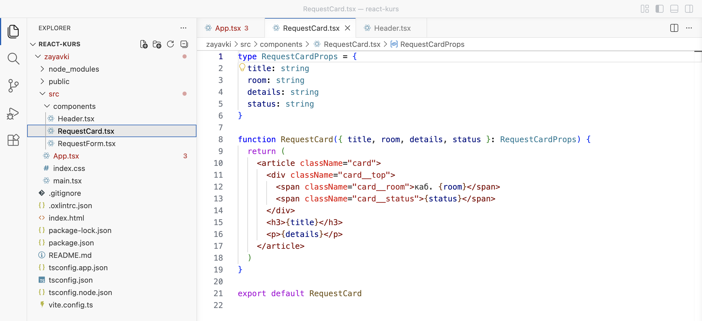
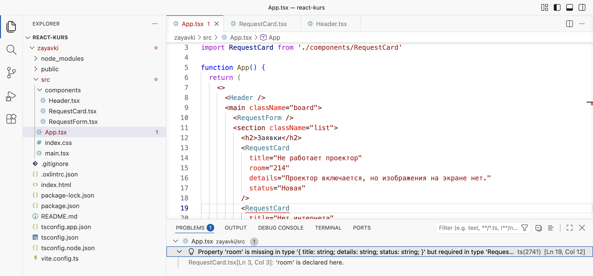
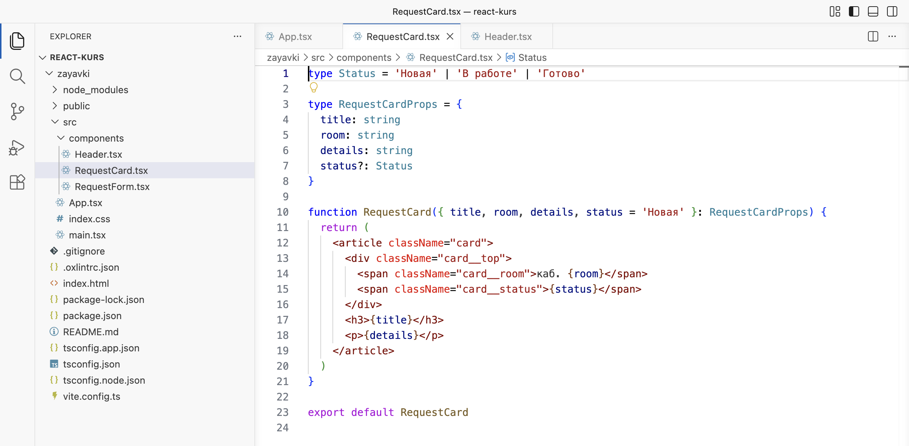
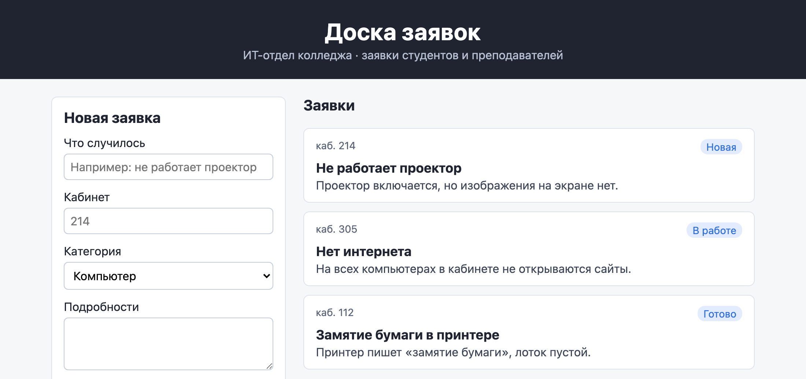
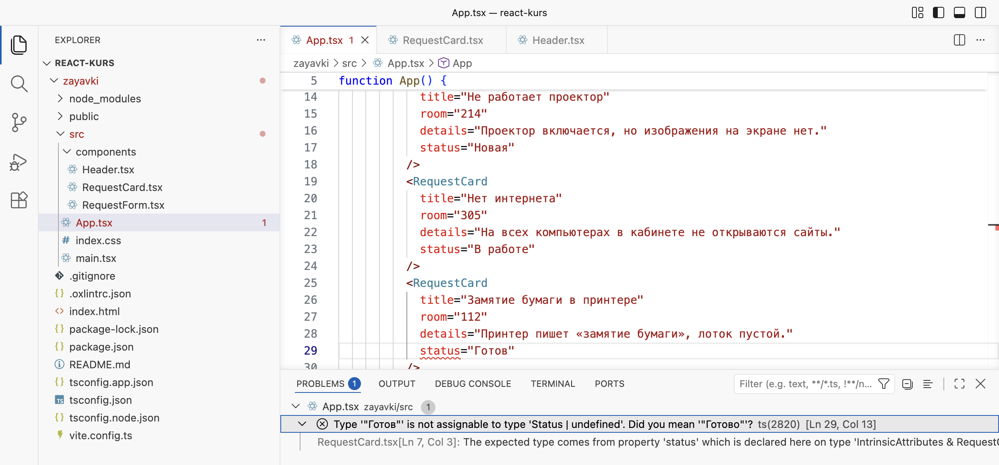

Справочник по Angular и React · модуль 1 · первый проект и первый бот
1.3
Props: данные
от родителя
В этой главе разобрано, как передать данные в компонент при его вызове. Карточка заявки из главы 1.2 получает тему, кабинет, подробности и статус, и три одинаковые карточки становятся тремя разными заявками. Показано, как TypeScript описывает props и что он находит в редакторе: забытое свойство, опечатку в имени, недопустимый статус. Отдельно разобрано, почему страница при такой ошибке всё равно открывается и где ошибку нужно искать.
- Категория
- React
- Уровень
- Начальный
- Что понадобится
- Проект
zayavkiпосле главы 1.2 (или архив ниже) и запущенныйnpm run dev - Результат
- Карточка RequestCard получает данные через props, на доске три разные заявки
Если проекта нет или он в другом состоянии
Архив содержит проект zayavki в том состоянии, с которого начинается глава, — после главы 1.2. Папки node_modules в архиве нет: её создаёт команда npm install по списку пакетов из package.json.
Архив закрыт паролем. После нажатия на кнопку введите пароль — его сообщает преподаватель.
- Распакуйте архив в папку с проектами курса, например
react-kurs. Появится папкаzayavki. Если папка с таким именем там уже есть, сначала переименуйте старую, например вzayavki-staraya. - Откройте папку курса в VS Code: File → Open Folder.
- Откройте терминал (Terminal → New Terminal) и выполните три команды по очереди. Последняя запускает сервер разработки; страница открывается по адресу
http://localhost:5173/.
cd zayavki npm install npm run dev
§1Что такое props
В главе 1.2 компонент сравнивался с бланком заявления: постоянный текст и пустые поля. Бланк печатают один раз, а заполняет его каждый, кто подаёт заявление: один пишет «проектор, кабинет 214», другой — «интернет, кабинет 305». Бланк один, заявления разные.
Бланк заполняет сам заявитель, а компонент заполняет тот, кто его вызывает, — родительский компонент.
Props (от properties — свойства) — данные, которые компонент получает от родителя при вызове. Родитель записывает их как атрибуты тега: <RequestCard title="Нет интернета" room="305" />. React собирает все атрибуты в один объект и передаёт его функции компонента первым параметром. Компонент берёт значения из этого объекта и подставляет в свою разметку в фигурных скобках.
Один компонент, три вызова с разными props
App вызывает одну и ту же функцию RequestCard три раза и каждый раз передаёт свои title, room, details и status. Поэтому на доске появятся три разные карточки.
Props уже встречались в главе 1.2, только не назывались так: атрибуты className, htmlFor, rows — это props, которые React передаёт тегам HTML. Разница в том, что для своих компонентов имена props придумывает разработчик.
§2Тип props и распаковка
TypeScript должен знать, какие props ожидает компонент и какого они вида. Для этого описывается тип — перечень полей объекта с видом значения у каждого. Тип записывается словом type:
type RequestCardProps = {
title: string
room: string
details: string
status: string
}RequestCardProps — имя типа; по договорённости его составляют из имени компонента и слова Props. В фигурных скобках перечислены поля: слева имя, после двоеточия вид значения. string означает строку — любой текст в кавычках. Все четыре поля обязательные: компонент нельзя вызвать, не передав каждое из них. По этому описанию VS Code подсказывает имена props при вызове компонента и подчёркивает красным пропущенные или лишние.
Распаковка объекта props
Посылку можно держать закрытой и каждый раз доставать из неё нужный предмет. А можно сразу распаковать и разложить предметы на столе: дальше берёшь каждый по названию.
Предметы из посылки уходят, а в коде объект props остаётся целым: распаковка только создаёт короткие имена для его полей.
Функция компонента получает props одним объектом. Обращаться к его полям можно через точку — props.title, props.room. Удобнее сразу распаковать объект в параметре функции: перечислить нужные поля в фигурных скобках. Ниже одна и та же карточка записана двумя способами, результат у них одинаковый.
function RequestCard(props: RequestCardProps) { return <h3>{props.title}</h3> }
function RequestCard({ title }: RequestCardProps) { return <h3>{title}</h3> }
В обоих вариантах после двоеточия стоит RequestCardProps: так параметру назначается тип. Во втором варианте фигурные скобки в параметре означают «взять из полученного объекта поле title и положить в переменную с тем же именем». В проектах на React почти всегда используют второй вариант: по первой строке функции сразу видно, какие props компонент использует.
§3Карточка получает данные
Работа идёт в проекте zayavki, сервер разработки запущен, доска заявок из главы 1.2 открыта в браузере.
ДелаемПередаём данные в карточки
- Замените содержимое RequestCard.tsx
Откройте
src/components/RequestCard.tsx, выделите весь текст (Ctrl+A), вставьте код ниже и сохраните.zayavki/src/components/RequestCard.tsx type RequestCardProps = { title: string room: string details: string status: string } function RequestCard({ title, room, details, status }: RequestCardProps) { return ( <article className="card"> <div className="card__top"> <span className="card__room">каб. {room}</span> <span className="card__status">{status}</span> </div> <h3>{title}</h3> <p>{details}</p> </article> ) } export default RequestCard

Так должен выглядеть RequestCard.tsx: тип props в начале, распаковка в параметре функции После сохранения карточки на странице опустеют: в них останутся только «каб.» и рамка. Причина в том, что
Appпока вызывает карточку без props. ВApp.tsxпоявятся три красные ошибки; их исправляет следующий шаг. - Передайте данные из App
Откройте
src/App.tsx, замените содержимое кодом ниже и сохраните.zayavki/src/App.tsx import Header from './components/Header' import RequestForm from './components/RequestForm' import RequestCard from './components/RequestCard' function App() { return ( <> <Header /> <main className="board"> <RequestForm /> <section className="list"> <h2>Заявки</h2> <RequestCard title="Не работает проектор" room="214" details="Проектор включается, но изображения на экране нет." status="Новая" /> <RequestCard title="Нет интернета" room="305" details="На всех компьютерах в кабинете не открываются сайты." status="В работе" /> <RequestCard title="Замятие бумаги в принтере" room="112" details="Принтер пишет «замятие бумаги», лоток пустой." status="Готово" /> </section> </main> </> ) } export default App

Так должна выглядеть страница: три разные заявки с разными статусами
РазбираемсяЧто изменилось в карточке и App
Сначала — что изменилось в карточке. Цифры в кружках отмечают строки, под кодом каждая объяснена простыми словами.
type RequestCardProps = { 1 title: string 2 room: string details: string status: string } function RequestCard({ title, room, details, status }: RequestCardProps) { 3 return ( <article className="card"> <div className="card__top"> <span className="card__room">каб. {room}</span> 4 <span className="card__status">{status}</span> 5 </div> <h3>{title}</h3> 6 <p>{details}</p> </article> ) } export default RequestCard
- 1
«Карточке нужны вот такие данные». Это тип props — список того, что карточка ждёт от родителя. Сам на странице ничего не показывает, нужен TypeScript и редактору для проверки.
- 2
Первое, что нужно, —
title, текст (string). Так же ниже: кабинет, подробности и статус — все текстом. - 3
«Получи данные от родителя и разложи по четырём переменным». В фигурных скобках перечислены имена из типа, после двоеточия — сам тип. Теперь внутри карточки слово
titleозначает тот заголовок, который передалApp. Так записывается распаковка объекта props из §2. - 4
«каб.» — постоянный текст, а на место
{room}подставится номер кабинета этой карточки. Раньше здесь было записано «каб. 214» для всех. - 5
На место
{status}— статус этой заявки. - 6
Заголовок и ниже подробности тоже подставляются. Разметка и ярлыки
classNameостались прежними, поэтому стили из главы 1.2 работают как раньше.
Теперь — что изменилось в App.tsx. Вызов каждой карточки занимает несколько строк, по атрибуту на строку:
<RequestCard 1 title="Не работает проектор" 2 room="214" 3 details="Проектор включается, но изображения на экране нет." status="Новая" /> 4
- 1
«Поставь сюда карточку». Тег открыт, но не закрыт: дальше идут данные для неё.
- 2
Заголовок для этой карточки. Слева имя из типа props, справа значение в кавычках.
- 3
Номер кабинета тоже записан в кавычках, как текст: в типе
roomобъявлен какstring. Кабинет может называться и словом, например «актовый зал». - 4
Косая черта закрывает тег карточки. Её ставят на отдельной строке, когда атрибутов три и больше: так их удобно читать.
Пошаговый разбор ниже показывает, как данные из App попадают в карточку. Слева код карточки, справа — какие значения она получила и что появилось на странице.
type RequestCardProps = { title: string room: string details: string status: string } function RequestCard({ title, room, details, status }: RequestCardProps) { return ( <article className="card"> <div className="card__top"> <span className="card__room">каб. {room}</span> <span className="card__status">{status}</span> </div> <h3>{title}</h3> <p>{details}</p> </article> ) } export default RequestCard
- React собирает атрибуты в объект
В
Appзаписано<RequestCard title="Не работает проектор" room="214" … />. React складывает все атрибуты в один объект и вызывает функциюRequestCard, передав ей этот объект.propstitle: 'Не работает проектор'room: '214'details: 'Проектор включается, но…'status: 'Новая' - Распаковка: четыре переменные
Фигурные скобки в параметре раскладывают объект по переменным с теми же именами.
title'Не работает проектор'room'214'status'Новая'details'Проектор…' - Подстановка в верхнюю строку
На место
{room}встаёт214, на место{status}— «Новая».<div class="card__top">каб. 214 · Новая - Подстановка заголовка и подробностей
Карточка собрана и возвращается в
App.каб. 214Не работает проекторНовая - Второй вызов — другие данные
Для второго
<RequestCard … />React вызывает ту же функцию ещё раз, теперь с объектом второй заявки. Переменные получают новые значения.title'Нет интернета'room'305'status'В работе' - Три вызова — три разные карточки
Функция одна, разметка в ней одна, а данные каждый раз свои. Поэтому на доске три разные заявки.
каб. 214Не работает проекторНоваякаб. 305Нет интернетаВ работекаб. 112Замятие бумагиГотово
§4Что будет, если забыть свойство
Все четыре props в типе обязательные. Опыт показывает, что происходит, если одно из них не передать.
ДелаемОпыт: карточка без кабинета
- Удалите room у второй карточки
В
App.tsxу второй карточки удалите строкуroom="305"и сохраните. Вызов карточки станет таким:App.tsx · вторая карточка без room <RequestCard title="Нет интернета" details="На всех компьютерах в кабинете не открываются сайты." status="В работе" />
- Посмотрите на редактор
Имя
RequestCardв строке 19 подчеркнуто красным. Откройте панель Problems: меню View → Problems или щелчок по счётчику ошибок в строке состояния внизу.
Редактор: вызов карточки подчёркнут, в панели Problems — ошибка ts(2741) - Посмотрите на страницу
Страница открывается, но у второй карточки после «каб.» пусто.
Страница при этой ошибке открывается: у второй карточки после «каб.» пусто - Запустите сборку
Откройте второй терминал (Terminal → New Terminal; первый занят сервером разработки) и выполните команду:
Терминал cd zayavki && npm run build
Сборка останавливается на той же ошибке:
Терминал · npm run build > zayavki@0.0.0 build > tsc -b && vite build src/App.tsx(19,12): error TS2741: Property 'room' is missing in type '{ title: string; details: string; status: string; }' but required in type 'RequestCardProps'.
РазбираемсяПочему страница открылась, а сборка нет
Кроме подчёркивания, файл App.tsx в проводнике стал красным, а в строке состояния появился счётчик ошибок. Полный текст ошибки в панели Problems: Property 'room' is missing in type '{ title: string; details: string; status: string; }' but required in type 'RequestCardProps'. Читается так: «свойство room отсутствует в переданном объекте, но требуется типом RequestCardProps». В скобках перечислено то, что передано, — title, details, status. Строка под ошибкой 'room' is declared here указывает, где в RequestCard.tsx объявлено это свойство.
Страница при этом открылась, а во второй карточке после «каб.» пусто. Так происходит потому, что сервер разработки Vite типы не проверяет: он только переводит TypeScript в JavaScript, отбрасывая описания типов, — так быстрее. Проверку типов выполняют редактор и команда сборки.
Команда tsc -b нашла ошибку в строке 19, символ 12, и vite build не запустился. Знак && выполняет вторую команду, только если первая прошла без ошибок (глава 1.1, §3).
Отсюда правило работы: смотреть на ошибки в редакторе, даже если страница выглядит нормально. Счётчик ошибок в строке состояния VS Code должен показывать ноль.
ДелаемВозвращаем кабинет
- Верните room="305"
Нажмите Ctrl+Z в
App.tsx, чтобы вернуть удалённую строку, или вставьте кодApp.tsxиз §3. Сохраните. Подчёркивание исчезнет, у второй карточки снова появится номер кабинета.
§5Статус из трёх значений
На бумажном бланке поле «Статус» можно оставить пустым строчками, и кто-то напишет «Новая», кто-то «новая», а кто-то «Нов.». Если вместо строчек напечатать три квадратика — «Новая», «В работе», «Готово» — и попросить отметить один, разночтений не будет.
Квадратик на бумаге можно не отметить вовсе, а TypeScript для обязательного поля это не пропустит.
Сейчас status объявлен как string, то есть любая строка. Можно передать «Новый» или «готово» с маленькой буквы, и TypeScript ошибку не покажет. Но статусов у заявки всего три, и тип может это записать. Кроме того, новая заявка почти всегда имеет статус «Новая», и писать его при каждом вызове необязательно: у свойства можно задать значение по умолчанию.
Для этого в TypeScript есть три записи. Объединение 'Новая' | 'В работе' | 'Готово' — тип, значением которого может быть только одна из перечисленных строк; черта | читается как «или». Вопросительный знак после имени поля (status?:) делает свойство необязательным. Значение по умолчанию задаётся при распаковке знаком равенства: status = 'Новая' — если родитель статус не передал, будет «Новая».
ДелаемСтатус из трёх значений
- Замените содержимое RequestCard.tsx
zayavki/src/components/RequestCard.tsx type Status = 'Новая' | 'В работе' | 'Готово' type RequestCardProps = { title: string room: string details: string status?: Status } function RequestCard({ title, room, details, status = 'Новая' }: RequestCardProps) { return ( <article className="card"> <div className="card__top"> <span className="card__room">каб. {room}</span> <span className="card__status">{status}</span> </div> <h3>{title}</h3> <p>{details}</p> </article> ) } export default RequestCard

Так должен выглядеть RequestCard.tsx: тип Status в первой строке, status? в типе props, значение по умолчанию в параметре - Уберите статус у первой карточки
В
App.tsxу первой карточки удалите строкуstatus="Новая": статус «Новая» теперь подставится сам. Можно вместо этого заменить весь текст файла кодом ниже. Сохраните.zayavki/src/App.tsx import Header from './components/Header' import RequestForm from './components/RequestForm' import RequestCard from './components/RequestCard' function App() { return ( <> <Header /> <main className="board"> <RequestForm /> <section className="list"> <h2>Заявки</h2> <RequestCard title="Не работает проектор" room="214" details="Проектор включается, но изображения на экране нет." /> <RequestCard title="Нет интернета" room="305" details="На всех компьютерах в кабинете не открываются сайты." status="В работе" /> <RequestCard title="Замятие бумаги в принтере" room="112" details="Принтер пишет «замятие бумаги», лоток пустой." status="Готово" /> </section> </main> </> ) } export default App

Так должна выглядеть страница: у первой карточки статус «Новая» — значение по умолчанию
РазбираемсяЧто изменилось в типе props
type Status = 'Новая' | 'В работе' | 'Готово' 1 type RequestCardProps = { title: string room: string details: string status?: Status 2 } function RequestCard({ title, room, details, status = 'Новая' }: RequestCardProps) { 3
- 1
«Статус бывает только таким: Новая, В работе или Готово». Черта
|читается как «или». Это объединение трёх строк, у него своё имяStatus, потому что статус понадобится и в других компонентах. - 2
Вопросительный знак после имени: «статус можно не передавать». Без знака
?поле обязательное, какtitleиroom. - 3
status = 'Новая': «если статус не передали, считать его новым». Это значение по умолчанию. Поэтому у первой карточки статус «Новая», хотя вApp.tsxстрокиstatusу неё больше нет.
ДелаемОпыт: опечатка в статусе
- Напишите статус с опечаткой
В
App.tsxу третьей карточки заменитеstatus="Готово"наstatus="Готов"и сохраните.
Редактор: TypeScript не принимает «Готов» и предлагает «Готово» - Верните «Готово»
Исправьте опечатку обратно на
status="Готово"и сохраните. Счётчик ошибок внизу снова 0.
РазбираемсяЧто написано в ошибке
Редактор подчеркнул строку 29, ошибка в панели Problems: Type '"Готов"' is not assignable to type 'Status | undefined'. Did you mean '"Готово"'? — «значение "Готов" нельзя присвоить типу Status или undefined. Может быть, имелось в виду "Готово"?». undefined в сообщении появился из-за вопросительного знака: необязательное свойство может быть и не передано. Если бы status оставался типа string, опечатка прошла бы незамеченной, и на карточке появился бы статус «Готов».
§6Данные идут сверху вниз
Props передаются в одну сторону: от родителя к ребёнку. В App записано, какие заявки показать, и оттуда данные передаются карточкам. Карточка получает props и только выводит их; изменить их она не может и не должна. Если бы карточка поменяла свой status, в App остался бы прежний статус. Данные на странице разошлись бы с данными в родителе — та же ошибка, что в витрине с ручным обновлением из главы 0.1.
Поэтому правило React такое: компонент относится к своим props как к значениям только для чтения. Пусть карточке нужно что-то изменить, например сменить статус по кнопке «Взять в работу». Тогда она сообщает об этом родителю. Родитель меняет свои данные и передаёт карточке новые props. Как хранить изменяемые данные и как компонент сообщает родителю о событии, разобрано в главе 1.4.
Остался ещё один повтор: три вызова <RequestCard> в App.tsx записаны вручную, по одному на заявку. Для доски, где заявок десятки, данные хранят списком и выводят карточки из него. Это предмет главы 1.5.
Проект после главы
Архив содержит проект zayavki в состоянии конца главы. По нему можно сверить свой код или начать следующую главу. Распаковка и запуск — как у архива в начале главы.
Архив закрыт паролем. После нажатия на кнопку введите пароль — его сообщает преподаватель.
§7Частые ошибки
Сообщения ниже получены командой tsc -b в проекте zayavki; VS Code показывает те же сообщения в панели Problems.
| Что видно | Почему | Что сделать |
|---|---|---|
Property 'room' is missing in type '{ … }' but required in type 'RequestCardProps' | При вызове не передано обязательное свойство | Добавить атрибут room="…" или сделать свойство необязательным: room?: string |
Property 'tittle' does not exist on type 'IntrinsicAttributes & RequestCardProps'. Did you mean 'title'? | Опечатка в имени свойства при вызове | Исправить имя на то, что подсказано после Did you mean |
Type '"Готов"' is not assignable to type 'Status | undefined'. Did you mean '"Готово"'? | Значение не входит в объединение допустимых строк | Выбрать одно из значений типа Status |
Type 'number' is not assignable to type 'string' | Передано число room={214}, а в типе room: string | Передать строку room="214" или изменить тип, если по смыслу нужно число |
'{' or JSX element expected | Значение записано без кавычек и без скобок: room=214 | Строку — в кавычки room="214", выражение — в скобки room={214} |
'RequestCard' cannot be used as a JSX component | Параметры функции перечислены без фигурных скобок: RequestCard(title, room, …). React передаёт один объект, а функция ждёт четыре отдельных параметра | Записать распаковку в фигурных скобках: RequestCard({ title, room, … }: RequestCardProps) |
| Страница открывается, но в карточке пустое место | Ошибка типа есть, но сервер разработки типы не проверяет | Смотреть на счётчик ошибок в строке состояния VS Code и панель Problems |
§8Проверьте себя
Что такое props и кто их задаёт?
Props — данные, которые компонент получает при вызове. Их задаёт родительский компонент, записывая атрибуты тега: <RequestCard title="…" room="…" />. React собирает атрибуты в объект и передаёт его функции компонента.
Чем отличаются записи function RequestCard(props: RequestCardProps) и function RequestCard({ title }: RequestCardProps)?
В первой функция получает весь объект props, и к полям обращаются через точку: props.title. Во второй объект распаковывается в параметре, и поле доступно сразу по имени title. Результат одинаковый.
Почему при забытом свойстве room страница открылась, а npm run build — нет?
Сервер разработки Vite только переводит TypeScript в JavaScript и типы не проверяет, поэтому код запускается, и на месте room оказывается пусто. Команда сборки начинается с tsc -b, которая проверяет типы, находит ошибку и останавливает сборку.
Что означает запись status?: 'Новая' | 'В работе' | 'Готово'?
Свойство status необязательное (знак ?), а если передано, то может быть только одной из трёх строк (черта | означает «или»). Любая другая строка — ошибка в редакторе.
Карточке нужно сменить статус заявки. Можно ли поменять props внутри RequestCard?
Нет. Props только для чтения: данные принадлежат родителю. Карточка должна сообщить родителю о событии, а родитель изменит свои данные и передаст карточке новые props. Как это делается, разобрано в главе 1.4.
Шапка Header всегда показывает подпись «ИТ-отдел колледжа». Что нужно изменить, чтобы подпись задавал App?
Четыре изменения:
- описать тип props шапки:
type HeaderProps = { subtitle: string }; - принять props в параметре:
function Header({ subtitle }: HeaderProps); - вывести
{subtitle}вместо текста подписи; - передать значение из App:
<Header subtitle="ИТ-отдел колледжа" />.
Шпаргалка
type CardProps = { title: string }function Card({ title }: CardProps)<Card title="Нет интернета" />status?: Status{ status = 'Новая' }'Новая' | 'В работе' | 'Готово'Итог главы
Props — данные, которые родитель передаёт компоненту атрибутами тега. React собирает их в объект, функция компонента получает его первым параметром и обычно сразу распаковывает: { title, room, details, status }. Тип props в TypeScript перечисляет поля и вид их значений; по нему редактор находит забытые свойства, опечатки в именах и недопустимые значения. Объединение строк ограничивает статус тремя значениями, знак ? делает свойство необязательным, а знак равенства в распаковке задаёт значение по умолчанию. Сервер разработки типы не проверяет, поэтому ошибки нужно смотреть в редакторе и при сборке. Props идут от родителя к ребёнку и внутри компонента не меняются. Доска заявок показывает три разные заявки из одного компонента RequestCard.
Источники
- react.dev — Passing Props to a Component
- react.dev — Using TypeScript
- TypeScript Handbook — Union Types
- vite.dev — TypeScript: Transpile Only